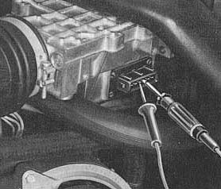

Electrical fault in intake sensor
- Pull connector off intake air sensor
- Connect an ohmmeter to terminals 6 and 9 on intake air sensor
(resistance 200 to 400 ohm)
- Measure on terminals 7 and 8 (resistance 120 to 200 ohm)

Resistance OK Resistance not OK